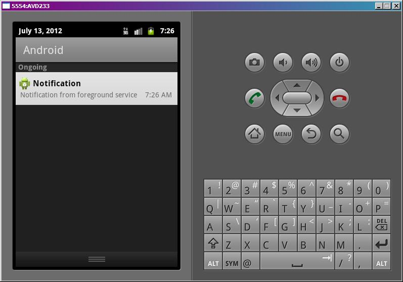
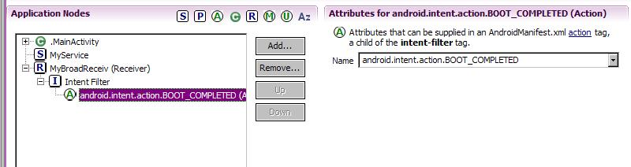
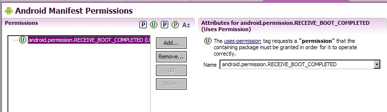

В этом уроке:
- изучаем IntentService
- включаем режим Foreground для сервиса
- помещаем сервис в автозагрузку
Строили мы, строили, и, наконец, построили. Урок номер 100, с чем всех нас и поздравляю )
В этом уроке рассмотрим еще несколько полезных вещей про сервисы. Выносить каждую из них в отдельный урок я не стал, вполне можно в одном все рассмотреть. Проекты здесь тоже создавать не будем, чтобы урок не получился слишком громоздким. Я просто приведу некоторые куски кода и скрины для наглядности своих рассуждений. А если у вас будет желание, вы по этим наработкам сами можете создать проекты-примеры.
IntentService
Это подкласс обычного Service. Он используется, если вам в сервисе надо выполнять какие-то тяжелые задачи, и вы не хотите сами возиться с асинхронностью. Принцип работы этого вида сервиса прост. Он создает новый поток для своей работы. Затем берет все Intent пришедшие ему в onStartCommand и отправляет их на обработку в этот поток. Как именно обрабатываются Intent – зависит от нас, т.к. мы сами кодим это в методе onHandleIntent.
Т.е. приложение отправляет в сервис вызовы startService, в которых передает Intent-ы. IntentService принимает эти вызовы в onStartCommand, берет Intent-ы и отправляет их в очередь на обработку. И далее они поочередно обрабатываются в отдельном потоке методом onHandleIntent. Когда последний Intent из очереди обработан, сервис сам завершает свою работу.
Пример
В приложении делаем три вызова:
startService(intent.putExtra("time", 3).putExtra("label", "Call 1") );
startService(intent.putExtra("time", 1).putExtra("label", "Call 2") );
startService(intent.putExtra("time", 4).putExtra("label", "Call 3") );Где time – это время паузы, которую будем делать в сервисе, а label – просто метка, чтобы отличать вызовы.
Код сервиса:
public class MyService extends IntentService {
final String LOG_TAG = "myLogs";
public MyService() {
super("myname");
}
public void onCreate() {
super.onCreate();
Log.d(LOG_TAG, "onCreate");
}
@Override
protected void onHandleIntent(Intent intent) {
int tm = intent.getIntExtra("time", 0);
String label = intent.getStringExtra("label");
Log.d(LOG_TAG, "onHandleIntent start " + label);
try {
TimeUnit.SECONDS.sleep(tm);
} catch (InterruptedException e) {
e.printStackTrace();
}
Log.d(LOG_TAG, "onHandleIntent end " + label);
}
public void onDestroy() {
super.onDestroy();
Log.d(LOG_TAG, "onDestroy");
}
}Здесь необходим конструктор, в котором вызываем конструктор супер-класса и указываем какое-нить имя. Оно будет использовано для наименования потока.
В методе onHandleIntent кодим обработку Intent-ов. Достаем из них time и label, запускаем паузу на time секунд и выводим в лог label в начале и в конце.
В итоге, при запуске в логах видим:
11:07:37.880: D/myLogs(4137): onCreate
11:07:37.880: D/myLogs(4137): onHandleIntent start Call 1
11:07:40.880: D/myLogs(4137): onHandleIntent end Call 1
11:07:40.880: D/myLogs(4137): onHandleIntent start Call 2
11:07:41.880: D/myLogs(4137): onHandleIntent end Call 2
11:07:41.880: D/myLogs(4137): onHandleIntent start Call 3
11:07:45.890: D/myLogs(4137): onHandleIntent end Call 3
11:07:45.890: D/myLogs(4137): onDestroy
Сервис создался, вызовы выполнились по очереди и сервис завершил работу. От нас понадобилось только написать обработку.
Foreground
Вы можете сказать системе, что ваш сервис очень важен для пользователя и его нельзя грохать при нехватке памяти. Это актуально, например, для музыкального плеера. В статус-бар при этом будет помещено уведомление.
Делается это методом startForeground (int id, Notification notification).
На вход он принимает те же параметры, что и NotificationManager.notify – ID и Notification.
Т.е. вы создаете уведомление, назначаете ему ID и передаете это в startForeground. Сервис переходит в режим IDDQD :), а в статус-баре появилось уведомление.

Оно появилось в разделе для постоянных уведомлений (Ongoing).
Метод stopForeground (boolean removeNotification) - возвращает сервису способность быть убитым системой в случае острой нехватки памяти. А на вход он принимает boolean-значение – удалять уведомление из статус-бара или нет.
Уведомление также пропадет, когда сервис будет остановлен.
Эти методы работают, начиная с Android 2.0. Пример реализации для более ранних версий есть в документацие.
Напомню, что уведомления мы научились создавать на прошлом уроке.
Автозагрузка
Сервисы для получения погоды или почты имеет смысл помещать в автозагрузку. Для этого нам надо создать BroadcastReceiver, настроить его IntentFilter на Action = android.intent.action.BOOT_COMPLETED, и добавить права android.permission.RECEIVE_BOOT_COMPLETED. Этот BroadcastReceiver будет вызван системой при старте системы и в нем мы кодим запуск сервиса.
Допустим, есть проект с сервисом MyService.
Создаем в проекте класс MyBroadReceiv
public class MyBroadReceiv extends BroadcastReceiver {
final String LOG_TAG = "myLogs";
public void onReceive(Context context, Intent intent) {
Log.d(LOG_TAG, "onReceive " + intent.getAction());
context.startService(new Intent(context, MyService.class));
}
}В манифесте добавляем его как Receiver и настраиваем фильтр

Добавляем права на получение сообщения о загрузке

Инсталлим проект на AVD. Закрываем AVD. Запускаем через меню в Eclipse: Window > AVD Manager. Находим там наш эмулятор и запускаем вручную.
Когда он запустился, смотрим логи
onReceive android.intent.action.BOOT_COMPLETED
MyService onCreate
MyService onStartCommand
Сработал BroadcastReceiver и запустил сервис.
Если после запуска AVD логи не отображаются, то откройте DDMS и во вкладке Devices явно выберите ваш AVD.